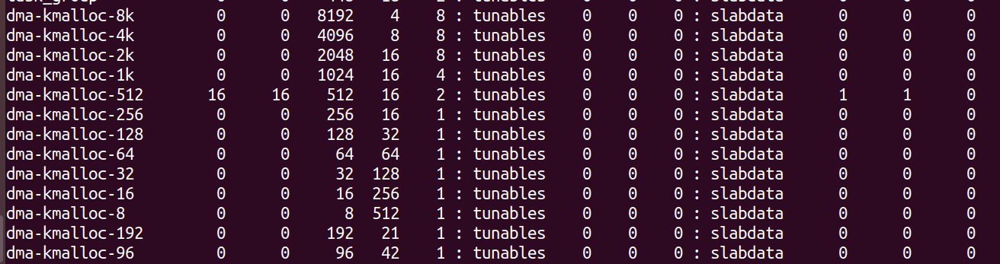
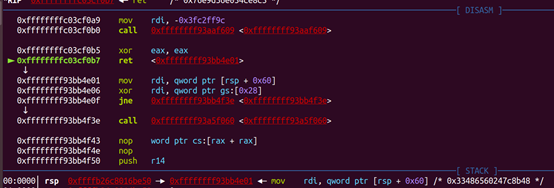
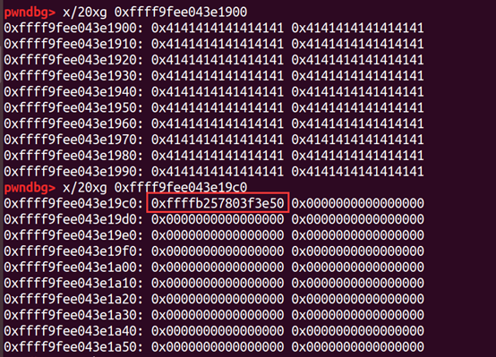
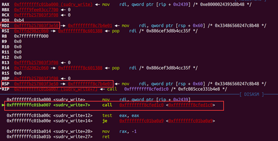
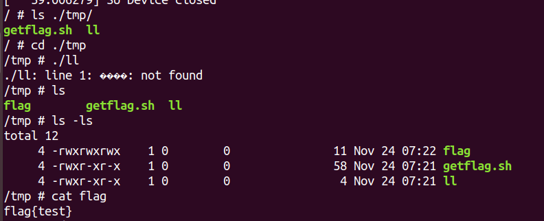

前面基本上将最基础的Kernel题做了一下，现在做一下最近的题，算是Kernel的进阶学习。
内核堆
首先学一点关于内核堆函数的知识。
内核一般会用到 kmalloc()、kzalloc()和 vmalloc()等函数。
kmalloc
1 | void *kmalloc(size_t size, gfp_t flags)； |
kmalloc()申请的内存位于物理内存映射区域，而在物理上也是连续的，他们与真实的物理地址只有一个固定的偏移，因为存在较简单的转换关系，所以对申请的内存大小有限制，不能超过128KB。
较常用的 flags(分配内存的方法)：
- GFP_ATOMIC：分配内存的过程是一个原子过程，分配内存的过程不会被高优先级进程或中断打断；
- GFP_KERNEL：正常分配内存
- GFP_DMA：给DMA控制器分配内存，需要使用该标志（DMA要求分配虚拟地址和物理地址连续）。
kfree
1 | void kfree(const void *objp); |
内核堆结构
Linux内核使用的是 slab/slub分配器，与glibc下的ptmalloc的fastbin有许多类似的地方，比如 Kfree后，空闲堆块也会有 fd指针指向下一个空闲块。
与glibc下ptmalloc2不同的是，slab/slub分配的堆的大小不是数据域加头结构的大小，而是与 slab/slub里面的内存桶对齐的，在root下使用如下命令，可以查看内存桶：
1 | cat /proc/slabinfo |

并且申请内核堆时，堆size是向上对齐的，例如申请 300字节空间，那么slab分配的实际空间的大小为 512，并且大小相同的堆靠在一起。
因此，如果要利用栈溢出写的话，应该以实际大小来计算偏移。
还有常见的攻击方法是，可以伪造空闲块的next指针，则可以很容易分配到我们想要的地方，不像ptmalloc2里的堆，还需要伪造堆头结构。这一点和tcache poisoning攻击十分类似。
2019 SUCTF Sudrv
程序分析
首先看一下 start.sh和文件系统里的 init，如下所示，可以发现开启了 Kaslr和smep，没有开启 dmesg_restrict，也就是我们可以使用dmesg输出内核缓冲区信息。
1 | #!/bin/sh |
1 | #! /bin/sh |
接着分析一下 sudrv.ko ,sudrv_init完成了驱动注册和堆的初始化。
1 | int __cdecl sudrv_init() |
sudrv_ioctl实现了三个功能：通过 kmalloc完成堆分配；通过 kfree实现堆释放。还通过 sudrv_ioctl_cold2实现堆输出，并且这里就存在一个格式化输出漏洞，我们可以输出内核栈上的一些信息。
1 | __int64 __fastcall sudrv_ioctl(__int64 a1, int a2, __int64 size) |
在 sudrv_write中实现了用户对堆数据的写，但是这里没有检查输入的大小，因此可以造成堆溢出。
1 | __int64 sudrv_write() |
利用分析
- 泄露
kernel地址和stack地址
首先利用格式化字符串泄露kernel和stack地址。这里得到kernel地址后减去初始的偏移，再与我们静态分析得到Kernel地址相减，得到最后的 offset。
- 修改堆
netx指针
然后利用堆溢出修改其紧邻的下一个堆的next指针。这里申请的堆块大小是 160，但是系统分配的堆块真实大小是 0xc0。所以溢出时首先要填充0xc0，再将 next指针指向 我们指向sudrv_write函数时的rsp。
然后再连续分配两次160的堆块，得到的第二个堆块就指向了 sudrv_write函数的rsp。我们在此补上ROP来getshell，可以直接使用ROP来getroot再getshell。也可以直接使用 ret2usr来 getshell。
通过下图，我们可以看到 sudrv_write函数执行完后，其ret是直接返回到 rsp的地址。

使用堆覆盖后，我们将紧邻的下一个堆块的next指向了 rsp。

可以看到分配到了rsp的伪堆块，然后写入ROP即可。

EXP
1 |
|
modprobe_path
modprobe_path指向了一个内核在运行未知文件类型时运行的二进制文件，党内和运行一个错误格式的文件的时候，会调用这个 modprobe_path所指向的二进制文件去，如果我们将这个字符串指向我们自己的二进制文件，那么在发生错误的时候就可以执行我们自己的二进制文件了。
这里 modprobe_path的地址可以通过 cat直接查看到：
1 | cat /proc/kallsyms | grep modprobe_path |
原理代码如下：
1 | int __request_module(bool wait, const char *fmt, ...) |
如果我们把 modprobe_path的内容换成我们自己的一个sh文件，那么就能以root权限去执行我们的sh文件。我们可以通过运行一个错误格式的二进制文件来出发调用 modprobe_path的内容：
1 | system("echo -ne '#!/bin/sh\n/bin/cp /flag /home/pwn/flag\n/bin/chmod 777 /home/pwn/flag' > /home/pwn/copy.sh"); |
需要注意的是 system里面的命令要程序的全路径，而不能是相对路径，cp命令要写为 /bin/cp；
也就是说这道题，我们可以直接使用修改堆的next指针指向 modprobe_path，将其改为我们自己创建的 sh文件。然后修改完之后，去执行错误的 sir文件，就能引发异常，从而使内核态执行我们的 sh文件。而 sh文件的的功能就是将flag拷贝到tmp，然后赋予 777权限，然后让我们普通用户能够读取。
该技术的前提条件如下：
- 知道
modprobe_path的地址； - 知道
kpti_trampoline的地址，以便在覆写modprobe_path之后干净地返回到用户空间； - 有任意写入原语
EXP
1 |
|
我们在执行结束之后，通过 执行 /tmp/ll引发异常报错，然后系统就会调用 getflag.sh，将 flag拷贝到 /tmp目录下，并赋予 777 权限。

Linux内核userfaultfd使用
一下内容，主要参考这篇文章。
背景知识
提权
内核提权的常用思路，在我们之前所讲中已经提到，即修改 task_struct中的 cred结构，commit_cred(prepare_kernel_creds(0))是常用的提权函数。
SMEP防止在内核态执行用户态代码，采用 ROP 来绕过；SMAP 防止内核态使用用户态数据，切断了用户态的 ROP，可以 copy_from_user和 copy_to_user来绕过 SMAP。
页和虚内存
内核的内存主要有两个区域，RAM 和 交换区，即将被使用的内存保存在 RAM中，暂时不被使用的内存放在交换区，内核控制交换进出过程。RAM中地址是物理地址，而内核使用虚地址，所以通过页表建立虚地址到物理地址的映射。虚拟页和物理页大小都是 0x1000字节，64位系统下需 2^52 个页。
页调度与延迟加载
有的内存既不在 RAM也不在交换区，例如 mmap创建的内存映射页。mmap页在 read/write访问之前，实际上还没有创建（还没有映射到实际的物理页），例如：mmap(0x1337000, 0x1000, PROT_READ|PROT_WRITE, MAP_FIXED|MAP_PRIVATE, fd, 0);。
内核并未将 fd内容拷贝到 0x1337000，只是将地址 0x1337000映射到文件 fd。
当有如下代码访问时：
1 | char *a = (char *)0x1337000 |
若发生对该页的引用，则（1）为 0x1337000 创建的物理帧；（2）从 fd读内容到 0x1337000；（3）并在页表标记合适的入口，以便识别 0x1337000虚地址。如果是堆空间映射，仅第2步不同，只需将对应物理帧清0.
首次访问 mmap创建的页，会耗时很长，会导致上下文切换和当前线程的睡眠。
别名页 Alias pages
没有 ABI 能直接访问物理页，但内核有时需要修改物理帧的值（例如修改页表入口），于是引入了别名页，将物理帧映射到虚拟页。在每个线程的启动和退出的页表中，所以大多数物理帧有两个虚拟页映射到他，这就是 “别名”的由来。通常别名页的地址是 SOME_OFFSET + physical address。
userfaultfd
userfaultfd机制可以让用户来处理缺页，可以在用户空间定义自己的 page fault handler。这里可以参考官方文档。其工作流程可用下图表示:

其中 Faulting thread、mm core、userfaultfd都是属于同一个内核线程，右边 的 uffd monitor是属于另一个（内核）线程，其在用户态应该表现为共享地址空间的2个线程。
首先 Faulting thread读取了一块未分配物理页的内存（这里用到上述的页调度与延迟加载），触发了 page fault。此时进入到内核中处理，内核调用了 handle_userfault交给 userfaultfd相关的代码进行处理，此时该线程将被挂起进入阻塞状态。同时一个待处理的消息 uffd_msg结构通过该 fd发送到了另一个 monitor线程，该线程可以调用相关 API 进行处理(UFFDIO_COPY或UFFDIO_ZEROPAGE)并告知内核唤醒 faulting thread。可以看到使用 userfaultfd技术，我们可以在发生缺页时，竞争获得一个窗口期在原本进程中插入自己的操作。
下面讲述一下 userfault实现的基本过程：
1. 创建一个描述符 uffd
所有的注册内存区间、配置和最终的缺页处理等都需要用 ioctl来对这个 uffd操作。ioctl-userfaultfd支持 UFFDIO_API\ UFFDIO_REGISTER`UFFDIO_UNREGISTER\UFFDIO_COPY\UFFDIO_ZEROPAGE\UFFDIO_WAKE等选项。比如UFFDIO_REGISTER用来向userfaultfd机制注册一个监视区域，这个区域发生缺页时，需要用UFFDIO_COPY`来向缺页的地址拷贝自定义数据。
1 | # 2 个用于注册、注销的ioctl选项： |
1 | // userfaultfd系统调用创建并返回一个uffd，类似一个文件的fd |
2. 用 ioctl的 UFFDIO_REGISTER选项注册监视区域
1 | // 注册时要用一个struct uffdio_register结构传递注册信息: |
3. 创建一个处理专用的线程轮询和处理 “user-fault”事件
要使用 uerfaultfd，需要创建一个处理专用的线程轮询和处理 user-fault时间。主进程中 就要调用 pthread_create创建这个自定义的 handler线程：
1 | // 主进程中调用pthread_create创建一个fault handler线程 |
一个自定义的线程函数举例如下，这里处理的是一个普通的匿名页用户态缺页，需要做的是把我们一个一又的一个page大小的buffer内容拷贝到缺页的内存地址处。用到 poll函数轮询 uffd，并对轮询到的 UFFD_EVENT_PAGEFAULT事件(event)用拷贝 ioctl的 UFFDIO_COPY 选项进行处理。
注意：写 exp 只需处理一次缺页，可以不用循环：
1 | static void * fault_handler_thread(void *arg) |
2019-BalsnCTF KrazyNote
程序分析
1 | __int64 __fastcall init_module(__int64 a1, __int64 a2) |
程序首先注册了一个 unk_B60结构，该结构体为 miscdevice
1 | struct miscdevice { |
然后，可以看一下 B60的数据，这里只有 name和 fops：
1 | .data:0000000000000620 unk_620 db 0Bh ; DATA XREF: init_module+5↑o |
然后，可以看一下 其中 fops注册的结构 file_operations：
1 | // file_operations结构 |
可以看到该结构体，是对 file进行操作的结构体。我们看一下数据，会发现该结构体中，就有两个地方定义了函数 sub_10和 sub_0。而这两个地方刚好对应结构体的 unlocked_ioctl和 open指针，其他都是null。unlocked_ioctl和compat_ioctl有区别，unlocked_ioctl不使用内核提供的全局同步锁，所有的同步原语需自己实现，所以可能存在条件竞争漏洞。
1 | .data:00000000000006D0 dq offset sub_10 |
sub_0函数没什么东西，我们主要具体分析 unlocked_ioctl对应的sub_10函数，其主要实现了 new\edit\show\delete功能。然后主要有两个结构体，一个是 note，一个是用户传入的结构体 noteRequest ：
1 | // note结构——存储的note |
note中 key是用于加密存储数据的，length是数据的长度，content[]是一个动态数组的地址，用于存储数据；而 contentPtr=¬e->content - page_offset_base，上面提到的别名页的地址是[SOME_OFFSET + physical address]，page_offset_base就是这个SOME_OFFSET。
1 | if ( (unsigned int)a2 <= 0xFFFFFF01 ) |
New函数中，会首先从 note_list中得到空闲的note的idx，然后从 bufptr中取出空闲的地址，并将其赋值给 note结构，然后依次赋值 length 和 contentPtr。并将 bufptr指向下一处空闲地址，随后取出 encbuf，将用户数据拷贝到 encbuf，然后依次使用 key加密，最后将加密数据拷贝到 note->content。
1 | if ( (_DWORD)a2 == 0xFFFFFF01 ) // Edit |
Edit看着有点乱，但是总体逻辑还是 将用户输入 通过 copy_from_user拷贝到 encbuf，然后取出 note->content地址，将 encbuf数据加密后，拷贝到 note->content中。这里 注意： copy_from_user并不是原子性的操作，也并没有上锁，按照我们之前的分析缺页可以让其有一个很大的空窗期供我们操作，进而利用竞争改掉某些关键数据
1 | if ( (_DWORD)a2 != -254 ) |
delete函数很简单，将相应 note都清空，然后将 bufptr里都赋值为 0。
1 | if ( note2 ) // Show |
show函数，取出 note->content中加密的数据，解密后，使用 copy_to_user拷贝给用户空间。
利用分析
上面已经将 程序漏洞说明 是位于 Edit中 copy_from_user并非原子操作，其十分耗时，导致我们可以利用这个空闲时间，使用 userfault来执行某些操作，条件竞争制造漏洞。
- 缓冲区溢出构造
我们首先需要构造一个 堆溢出漏洞。先 New(buffer, 0x10),创建 note[0]。此时在空闲内存中的布局为，一个 note_struct的空间，加上 0x10的buf空间。
1 | note_struct //note[0] |
然后 按照上面 userfaultfd的处理流程，先使用 register_userfault()注册一个 userfaultfd处理程序。然后使用 Edit(0,1 PAGE_FAULT)。这里我们将 PAGE_FAULT定义为 一个地址，这里 Edit函数 会对该 地址指向的内存 进行访问，而这个地址并没有相应的页面映射，所以这里就会造成一次 userfaultfd错误，然后我们就可以使用我们自己的注册 userfaultfd处理程序来接管程序，从而在 一次内核操作中，完成属于我们自己的操作。从而造成条件竞争。
我们在自己的 handler函数中，完成了如下步骤：
1 | //现在主线程停在copy_from_user函数了，可以进行利用了 |
可以看到，我们先删掉了 note[0]，然后又创建了 两个 note，大小都为0。而这里我们新创建的new_note[0](这里我以 new_note[0]来区分我们最开始创建的 note[0]) 与 note[0]就发生了 内存共用，而 note[1]的 结构体刚好为 note[0]的buf区域，也即我们后续可以通过 edit(note[0])来修改 note[1]结构体的内容。此时内存布局如下：
1 | note_struct //new_note[0] |
然后，我们在 handler中，还将 note[0].buf[8]处的值改为了 0xff，而这个地址在 新内存布局中，刚好对应 note[1].length，所以这里 实现了 一个缓冲区溢出漏洞。
- 泄露数据
完成漏洞构造后，接下来我们就要选择泄露数据。
首先，可以利用 note[1]泄露 key，因为此时 note[1]的大小被改为了 0xff，其原本数据为 0x0，但输出时会进行解密 0^key=key，所以 能够把 key泄露出来。
然后这里后续提权，不管是用到 覆写 cred结构体，还是使用 modprobe_path的方法都必须知道 page_offset_base。因为不管是用 Edit还是 Show函数中，获取当前 note存储数据的地址，都是使用 cotentPtr+page_offset_base来获得，如下所示。那么就有一个很重要的点，当我们能修改 contentPtr后，我们就能够 写和泄露 指定地址的值。而前提就是 我们知道 page_offset_base的值。
1 | //Edit |
而这里为了构造一个符合我们目标的 contentPtr，我们需要先泄露当前 正确的 contentPtr值。这点我们很容易做到。只需要再创建一个 New(buffer, 0)，那么此时内存布局如下，我们输出 Show(note[1])时，其 buf[0x10]处的值即为 key^contentPtr_note2。
这样我们就把 note[2]的 contentPtr泄露出来了。
1 | note_struct //new_note[0] |
那么，接下来我们 将 contentPtr - 0x2568，得到 此时 module_base-page_offset_base的值 module_base_off 。这里为什么减去 0x2568，是因为 note[2]真实的 contentPtr位于 note.ko偏移 0x2568处。如下所示：
1 | pwndbg> x/20xg 0xffffffffc021c520 |
那么接下来，我们只需要用 module_base_off加上 我们想用的 note.ko里的偏移，就能实现对 note.ko 读写。这里，用到了一个十分巧妙地 代码：
1 | .text:00000000000001F7 140 4C 8B 25 12 2A 00 00 mov r12, cs:page_offset_base |
再这个代码处，用到了 page_offset_base，而这句代码是将 page_offset_base在 note.ko地基址相对于 0x1fe 的偏移 page_offset_base_offset 赋值给 r12。而 这个 page_offset_base_offset 是程序在动态执行才会被 确定的，所以我们需要 先输出 note.ko+0x1fa的值，如下所示，可以看到前 4字节 0xf9881aa2 就是 page_offset_base_offset。而这里输出 note.ko+0x1fa的方法是 将 note[2].contentPtr改为 module_base_off+0x1fa，如下所示。
1 | pwndbg> x/10xg 0xffffffffc021a000+0x1fa |
通过上面的方法得到 page_offset_base_offset后，我们就可以得到note.ko里的 page_offset_base的地址 page_offset_base_addr，其为 module_base_off+page_offset_base_offset+0x1fe，这里 还需要加 0x1fe的原因是 这里的 page_offset_base+offset是相对 0x1fe地址的，并不是 module_base。然后，我们就可以通过 page_offset_base_addr泄露 page_offset_base了。
1 | pwndbg> x/20xg 0xffffffffc021c520 |
这里，我们得到 page_offset_base后，就可以实现任意地址 读写了。后续提权的方法 可以使用 覆写 cred结构体，也可以使用 覆写modprobe_path。例如，我们通过 爆破遍历 到了 cred的地址，我们需要修改 cred时，需要将 note[2].contentPtr改为 (cred_addr-page_offset_base)^key的值即可。
注意，如果利用覆写 cred结构体，上面的步骤和泄露的数据已经足够。但是如果要利用 modprobe_path来说，则还需要知道 kernel_base。那么我们如何泄露呢?
在已经知道 page_offset_base的情况下， module_base_off-page_offset_base = module_base；
然后，如何泄露 kernel_base？我们可以利用上面泄露 page_offset_base的方法， 这里可以利用 note.ko里 用到 copy_to_user或 copy_from_user的地址，例如下所示：
1 | .text:000000000000006C 140 E8 7F 2B 00 00 call _copy_from_user |
这里调用了 copy_from_user函数，我们修改 contentPtr为 module_base_off+0x6d，然后泄露得到 copy_from_user_off相对于 0x71的偏移。那么此时 copy_from_user_addr为 module_base+0x71+copy_from_user_off。我们得到 copy_from_user函数的地址后，再减去我们通过静态分析得到的 copy_from_user相对于 kernel_base的偏移，即可得到 kernel_base的值。
得到 kernel_base之后，就可以按照之前所讲的获得 modprobe_path的方法来获得 modprobe_path地址。
EXP
1 | // gcc -static -pthread exp.c -g -o exp |
这里记录一下，当我们写好 exp后，怎么把自己的 程序传到服务器上执行，这里是把自己的程序打包后，分块传输，然后解压。
1 | #!/usr/bin/env python2 |
对于这道题的学习，真的促进了我对内核的理解，以及提高了我写exp的水平。不愧是 BalsnCTF的题，真的对人有很大提高
Linux Kernel 通用堆喷技术
2020-SECCON kstack
利用分析
1 | *RDX 0x8 |
1 | RDX 0x8 |


- 本文作者： A1ex
- 本文链接： http://yoursite.com/2020/11/20/Kernel进阶学习/
- 版权声明： 本博客所有文章除特别声明外，均采用 MIT 许可协议。转载请注明出处！